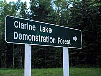
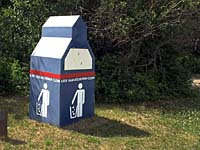
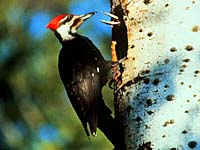
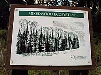
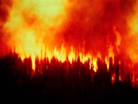
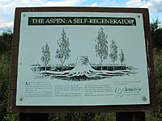
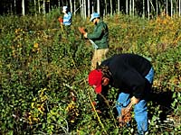
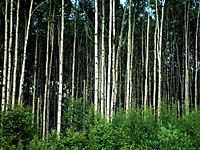
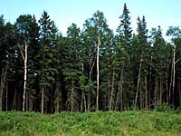

Welcome
Take Care
Forestry and Wildlife
Mixedwood Ecosystem
Self-Regenerator
Tree Planting
Forest Harvesting
| Location: | This QTVR was shot inside a clearcut section of the Clarine Lake Demo Forest, 17 kms north of Christopher lake on #2 and about 10 kms west into the demo forest. | ||
| GPS: 53d 39.91m N, 105d 56.76m W, 1617 feet 11 July 96, 6:55 pm, Fuji Velvia 50, F8 1/30s | |||
| Welcome To The Clarine Lake Demo Forest | |||
 About 50 kilometres north of Prince Albert, you will discover the Clarine Lake Demonstration Forest, located in Canada's Boreal Forest Region. This region's major tree species - like trembling aspen and black spruce - are slow-growing and have short life spans. The oldest trees are about 150 years old, since most of the trees grew after forest fires or were planted after logging operations were completed in the area. | |||
This area has been used for logging since the 1870s. Back then, this forest was known as Timber Berth #245 - part of the timber limits of Moore Mills. The area's logs were sent down the Little Red River to Prince Albert's first grist and saw mill, owned and operated by local businessman Henery Moore. Today, this is part of Weyerhaeuser Canada's Forest Management Licence Agreement (FMLA) area. | |||
Weyerhaeuser Canada's Clarine Lake Demonstration Forest is like an outdoor classroom - a living, breathing, dynamic display of integrated forest management. By following this self-guided, 15 kilometre, one-and-half hour auto tour, you and your family can learn all about a working forest. | |||

See firsthand some of Weyerhaeusers's harvesting and reforestation practices. Drive by new forests in various stages of growth. Learn how foresters manage a forest resource - with all forest users in mind. And remember, keep your eyes open! You never know when you may see tree planters hard at work, a harvesting operation, or some of the forest's wildlife. | |||
| Take Care in the Forest | |||
Remember, the Clarine Lake Demonstration Forest is a working forest. For your own safety and the protection of the forest, please keep these rules in mind: Watch for logging trucks while driving on the roads and obey all road signs. | |||
 Stay back 100 metres from all logging equipment and watch for flying debris. Please bring your own water supply - drinking water is not available in the area. Open fires are not permitted in the area. Please take your garbage with you. This is a user maintained site. | |||

Please stay away from wildlife. Approaching or feeding wildlife could endanger their lives and yours. The Demonstration Forest is open year round but will not be plowed in the winter. Since it is part of the Trans Canada Snowmobile Trail system, the area is accessible by snowmobile. | |||
| Forestry and Wildlife | |||

The forest is home to many species of wildlife and each one requires a different type of habitat. To create a better understanding of wildlife's unique needs, Weyerhaeuser Canada is involved in the Saskatchewan Forest Habitat Project, a joint study supported by governments, First Nations people, industry and conservation groups. The long-term project will help foresters develop integrated plans that satisfy the needs of wildlife and forests. | |||

The project has identified six wildlife indicator species: the moose, woodland caribou, the beaver, the snowshoe hare, the pileated woodpecker and the ovenbird. Each represents habitat requirements of a larger group of animals. With this information, forest and wildlife mangers can develop integrated plans that satisfy the needs of wildlife and the forest industry for the future. | |||
 Pileated woodpeckers are the indicator species for 33 animals that use tree cavaties during their life cycles. In this old cut over site, you can see where pileated woodpeckers have used some of the aspen trees for their homes. | |||
| The Mixedwood Ecosystem | |||
 The mixedwood ecosystem consists of two pricipal tree species: trembling aspen and white spruce. This ecosystem occurs on rolling glacial till with moderately coarse to moderately fine soil textures - the most productive soil in the boreal forest. | |||
 After a forest fire, both tree species regenerate. Aspen sprouts quickly while white spruce grow gradually. The first 15 to 17 years is a critical stage in a white spruce tree's growth because it is constantly suppressed by aspen leaf litter and understorey vegetation. During this period, a white spruce may grow to a height of about 1.5 meters, compared to an aspen which may measure 9 to 11 meters in height. | |||

For the next 50 to 60 years, there is intense competition for light and soil nutrients between the two tree species. The last major struggle occurs when white spruce finally break through the dying aspen canopy, becoming the dominant tree in the stand. | |||
| The Aspen: A Self-Regenerator | |||
 Aspen readily regenerate themselves after a harvest. When the soil is sufficiently warm, the aspen's entire root system sprouts. Each of these sprouts has the potential to become a tree. | |||
This is an example of natural aspen regeneration in an area that was harvested in 1989. | |||

Since aspen does not grow well in the shade, each sprout competes with its neighbour for vital sunlight. Aspen trees perform their own stand tending as weaker trees die and stronger ones take over. Aspen trees usually live for about 80 years - a relatively short life span. | |||

Aspen's prolific growth is desirable when foresters are re-establishing the species in a cut over area. However, in an area where there are multiple tree species, competition from aspen may severely hinder the growth of spruce and pine. This results in high regeneration costs. | |||
| Reforestation By Tree Planting | |||
At this site, a mixed wood forest of mature white spruce and aspen trees grew until they were harvested in the winter of 1989-90. The spruce logs were taken to Weyerhaeuser Canada's sawmill at Big River, while the aspen and smaller spruce were taken to the company's pulp and paper mill near Prince Albert. | |||
 This clear cut is now the site of a new forest where both white spruce and aspen trees will grow once again. After the harvest, there was an inadequate supply of natural white spruce seed onsite. To compensate for this, foresters have used artificial means of regeneration - such as planting or seeding. | |||
Several pieces of machinery have been used to physically control the relative amounts of aspen and spruce that will grow. At this site, the main objective of reforestation was to control the amount of natural aspen regeneration. | |||
 Left unchecked, aspen growth would have dominated the site and retarded the spruce plantation. In 1990, this area was first drum chopped to control the aspen, then disc trenched to provide a better plantation site. In the spring of 1991, the site was planted with white spruce seedlings, leaving the aspen to naturally regenerate. | |||
| Forest Harvesting And Growth Timeline | |||

This section of forest was harvested in 1968 and left to regenerate naturally. | |||
This section of forest was harvested in 1970 and left to regenerate naturally. | |||
This section of forest was harvested in 1972 and left to regenerate naturally. | |||
This section of forest was also harvested in 1972 and left to regenerate naturally until 1992, when the species balance was physically altered through a process known as "cleaning" or "thining." | |||

This worker is using a piece of equipment similar to a weed whip to control the balance of tree species, as the forest regenerates itself. | |||

This area was harvested in 1991 and to date it has been left to regenerate naturally. | |||
 This is an example of an unharvested stand of trees in the Clarine Lake Demonstration Forest. | |||